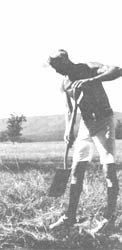

The smoking stars gather against it . . . the one who cares for flowers is leaving us.(from an Aztec song)
Most regular readers of this publication already know Alan Chadwick as the founder of the biodynamic/French intensive school oil horticulture. Many, no doubt, can even name a few of the sites - the University of California at Santa Cruz, the Green Gulch retreat, Virginia's Carmel in the Valley, and others - whose soil has experienced his magic. It's strange, then, that few people know much about Alan's background. . . about the influences and forces that fed this exceptional man to develop what could well be the most truly wholistic gardening method in existence.
So, since MOTHER has visited with Alan many times in the past, we'd like to present - by way of tribute - a brief biography of this extraordinary man . . . in both our words and his own.
Alan Chadwick was born - on July 27, 1909 - into the "upper crust" of Edwardian England's society. The family estate was enormous and dotted with formal gardens of varying themes and sizes. However, although the early exposure to such careful horticulture certainly, inspired Alan, his mother was the major influence upon the young boy.
"She was extremely artistic," he told us, "and gave me - at a terribly early age - an interest in all forms of creativity . . . and particularly in horticulture and the mystery that is the garden."
Chadwick's mother was also responsible for introducing her son to another strong influence . . . the mystic Austrian philosopher, Rudolph Steiner, whose theories about the interrelatedness of living things were later to contribute to the development of Alan's own gardening methods. Steiner was, however, regarded as an "utter crank" by most of his peers, and Chadwick has explained that the attitude of house guests toward his tutor ("Very often, at tea or dinner, they would turn to me and say, with just the slightest curl of the lip, 'Do you really study with that man, then?' ") served to further isolate the teenager who, from early youth, "never liked human beings . . . always got on with them in the worst way''.
But, though Alan had very little use for social interaction, his incredible energies led him to excel in any number of pursuits. The young man was to became a gold medal skier and skater, a professional painter and violinist, and a Shakespearean actor (a career which he followed for 32 years) ... studying gardening all the while. (It was, in Chadwick's own words, "the one means of resuscitation, where the energy for my other activities was generated".)
All of the man's pleasures, however, were brought to an abrupt halt by the beginning of the Second World War. It would be difficult to imagine anyone more poorly suited to military life than this artist/gardener. However, Britain - during World War II - demanded that many people ignore their true natures. As Alan explained it, "I'd been an objector, but I was soon running a mine sweeper ... somehow I was made a commander and spent four years on the bridge."
The war experience was a shattering one: "It absolutely capsized my attitude to civilization. I had nothing left that I could play, no cards left to play with humanity." And in order to get out of his native land, which was the focal point of the memories that haunted him, Alan accepted an offer to act in A Streetcar Named Desire . . . in a South African theater.
While there, Chadwick - who had already achieved the "huge marriage between vision and practicality" that was his synthesis of the biodynamic teachings of Steiner and the incredibly productive intensive gardening techniques that he'd studied in France - designed a 26-acre national display garden.
Still, though he was able to find joy on the stage and peace among his carefully tended raised planting beds, Alan's dislike for humanity caused him more and more to shut himself off from others. And he might well have remained that way, might well have gone through life without sharing his great gift, had he not met Countess Freya von Moltke . . . the widow of the famous German general, Helmuth von Moltke.
This amazing woman, who had recently endured the death of her husband and the defeat of her country, had maintained a great love for humanity despite the burden of her personal sorrows.
The two became dear friends ("she provided me with a balance point"), and years later it was Freya who arranged that Chadwick be offered a position with the University of Santa Cruz . . . and then convinced the still-reluctant gardener to accept the job, as well as the challenge of spreading his method that it presented.
I t's interesting to note that - although some hundreds of students have learned facets of the biodynamic/French intensive method while working directly with Chadwick, and literally thousands of men and women have had their whole conception of horticulture shifted 180° as a result of his work - Alan always denied (and sometimes did so emphatically) that he was a teacher. In speaking of the influence he had upon others, he chose to offer a different interpretation:
"The reason for all of it is simply that I love beauty . . . I adore beauty and I absolutely detest ugliness. There is also a factor beyond that, though. I've been very selfish for much of my life, you see. I have lived for nothing but art, I have lived for beauty. I have. And I haven't wanted to teach anyone anything . . . but the garden - and you must realize that I almost never speak of any one garden but of the concept itself - allowed me to see a way not to be a tutor but, instead, to expose a teaching.
"And I've found that the students, children and adults, who work with me can come to understand in that way. Instead of my telling them to do this and that - instead of my forcing them to learn names and procedures - I've been sometimes able to help them discover secrets. And the garden is all secrets, the whole miracle of the garden is made up of secrets, and I've been granted the chance to expose a few others to this incredible 'thing' which, itself , is the teacher.
"It is, you see - though many people seem to find the idea amusing - the garden that makes the gardener."
|
 |
|
|